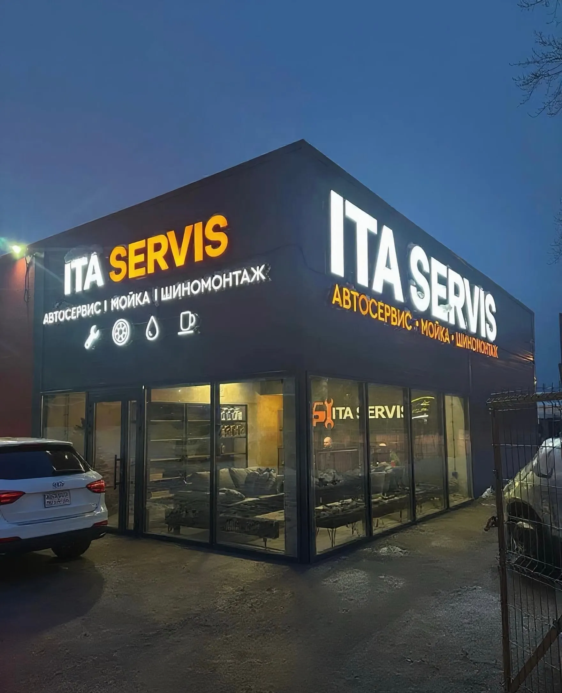
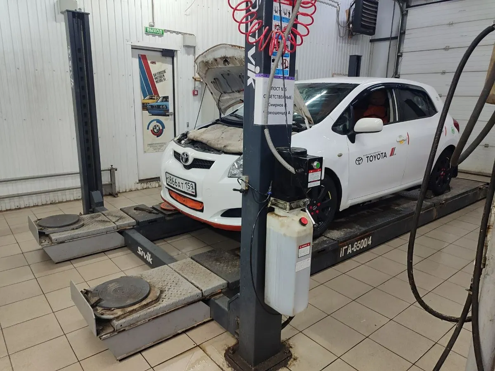
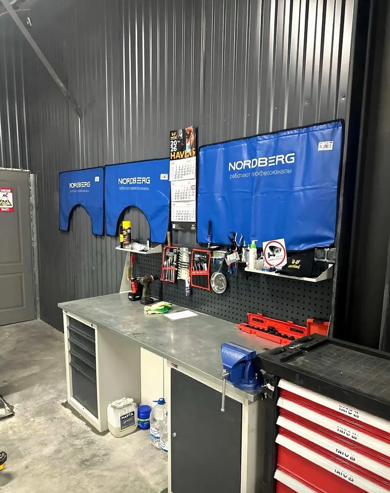
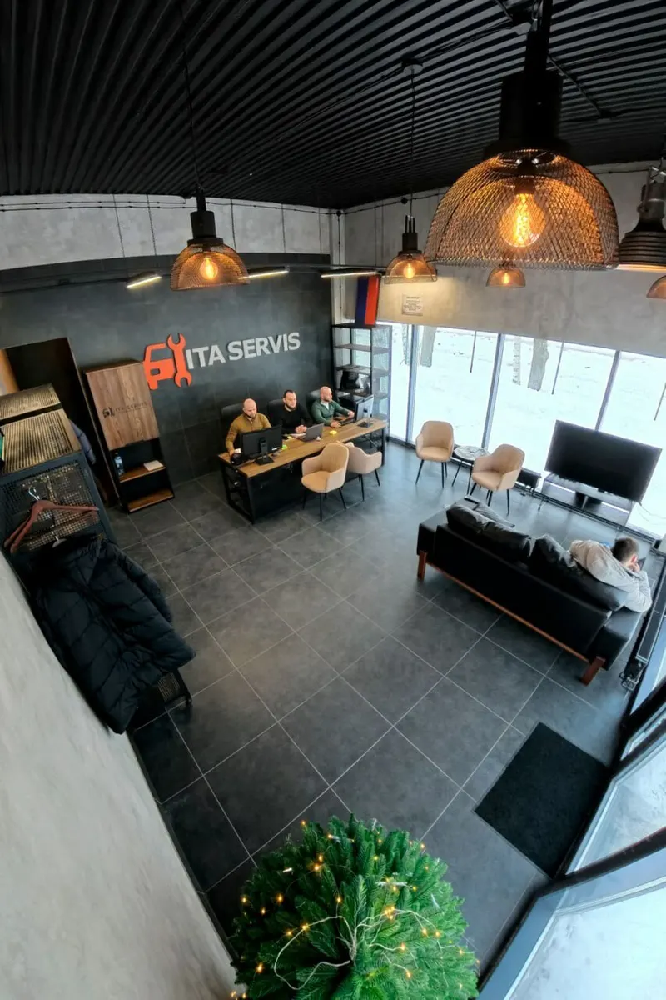

Автосервис, мойка, шиномонтаж: диагностика, подвеска, ТО, кондиционеры
Автосервис в Перми: диагностика подвески и ремонт с видеоотчётом
Диагностика на вибростенде, ремонт подвески и двигателя, сход-развал, ТО, кондиционеры, шиномонтаж и мойка. Работаем каждый день с 9:00 до 21:00.
- Ежедневно с 9:00 до 21:00
- Гарантия на работы и запчасти
- Видеоотчёт по ремонту, по отзывам клиентов

Услуги и цены
На карточке цены не указаны. Стоимость называем после диагностики, до начала ремонта.
Диагностика и обслуживание
- Диагностика подвески на вибростендеуточнить
- Компьютерная диагностикауточнить
- Техническое обслуживаниеуточнить
- Замена масла и фильтровуточнить
- Развал-схождениеуточнить
- Шиномонтажуточнить
Ремонт
- Ремонт подвескиуточнить
- Ремонт двигателя и КППуточнить
- Ремонт рулевых реекуточнить
- Ремонт и заправка кондиционерауточнить
- Ремонт автоэлектрикиуточнить
- Чип-тюнингуточнить
Как проходит визит
- 01
Записываетесь
Пишете или звоните, согласуете день и время.
- 02
Диагностика
Клиенты пишут, что мастер показывает неисправность и объясняет простым языком.
- 03
Ремонт и отчёт
По отзывам, процесс фиксируют на видео и отправляют владельцу в мессенджер.
- 04
Забираете автомобиль
Клиенты упоминают бонус: мойку автомобиля после ремонта.



Что отмечают клиенты в отзывах
Фото- и видеоотчёт
Клиенты пишут, что работы фиксируют на видео и присылают отчёт.
Показывают и объясняют
В отзывах отмечают, что неисправность показывают и объясняют простым языком.
Не навязывают лишнее
Клиенты пишут, что лишних услуг не предлагали.
Комфортная зона ожидания
В отзывах пишут про удобную комнату ожидания и бонусную мойку.
Отзывы с Яндекс.Карт
«Отличный сервис! Нашли все стуки в подвеске, которые ни один сервис не мог найти. Все манипуляции с автомобилем фиксируются на видео и отправляются владельцу в мессенджер. После диагностики все рассказали, показали, выдали рекомендации. Профессионалы своего дела! Однозначно рекомендую!»
Максим Александрович Б. · 3 июня
«Очень доволен остался работой данным автосервисом.Менеджер Тимофей всегда был на связи и предоставлял фото-видео отчет о проделанной работе. Дополнительные работы по моей просьбе были выполнены оперативно в короткие сроки, также дали рекомендации.В качестве подарка сделали трехфазную мойку авто! Рекомендую посетить данное место!»
broken · 1 июля
«Работают настоящие мужики, все чётко, без лишних слов, отдаю машину не в первый раз, изначально заехал на диагностику, механик рассказал, показал, посоветовал, менеджер который с тобой на связи постоянно, расписал все по полочкам, после диагностики приехал на ремонт, машину сделали отлично, быстро и без замечаний, но больше всего меня удивило то, что когда я приехал забирать машину, мне ее вымыли всю абсолютно, и салон тоже, бесплатно как бонус, нигде в другом сервисе я с таким не сталкивался. Спасибо всему персоналу ITA. Приеду обязательно еще раз.»
Володя Шарапов · 6 июля
Отзывы с карточки на Яндекс.Картах, без правок.
Частые вопросы
Нужно ли записываться заранее?
Да, на карточке указана предварительная запись. Напишите или позвоните, и мы согласуем время.
Когда вы работаете?
Каждый день с 9:00 до 21:00.
С какими автомобилями работаете?
На карточке указаны легковые и коммерческие автомобили: отечественные, европейские, японские, корейские, китайские марки.
Как оплатить?
Картой, наличными, по СБП и QR-коду, переводом.
Запишитесь на удобное время
- Адрес
- Усольская ул., 6, Пермь
- Часы
- Ежедневно 9:00–21:00
- Телефон
- +7 (909) 732-85-89